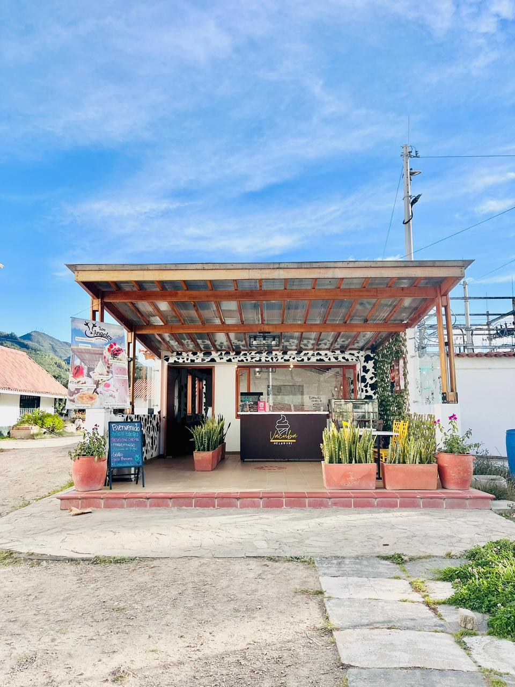
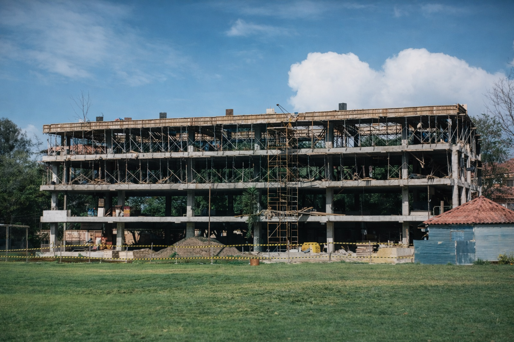

‹
›

Ampliación Planta Física – GANALAC
Cucunubá · Diseño y Construcción
Área 126 m² · 2022

Colegio Cardenal Sancha
Ampliación Edificio Occidental · Bogotá
1600 m² · 1997

Pavimentación Vereda Guatancuy
Municipio de Ubaté
Año 2003